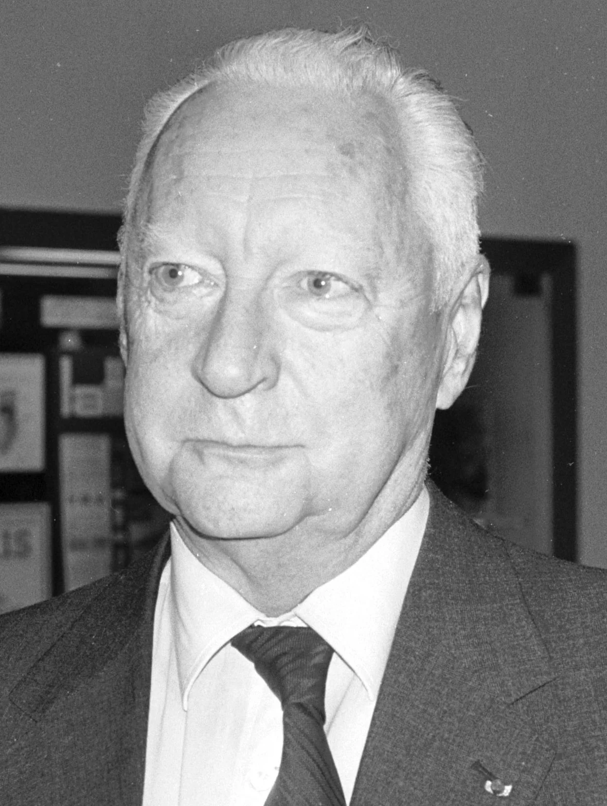
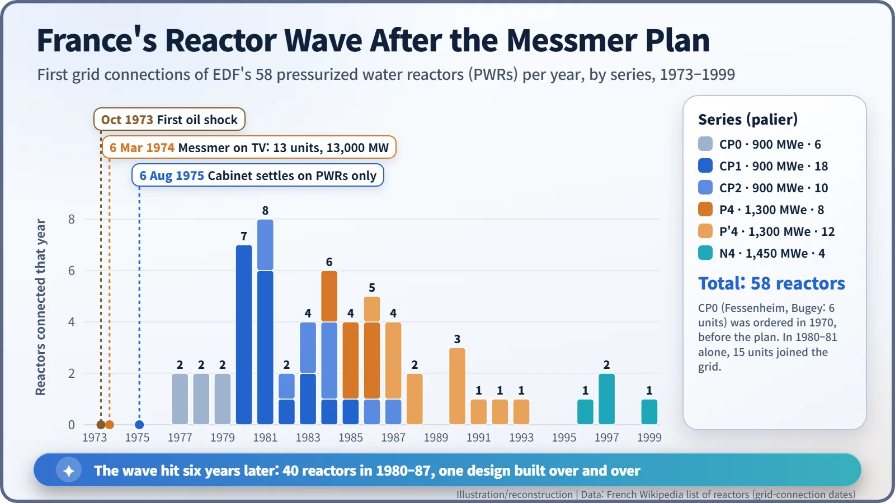
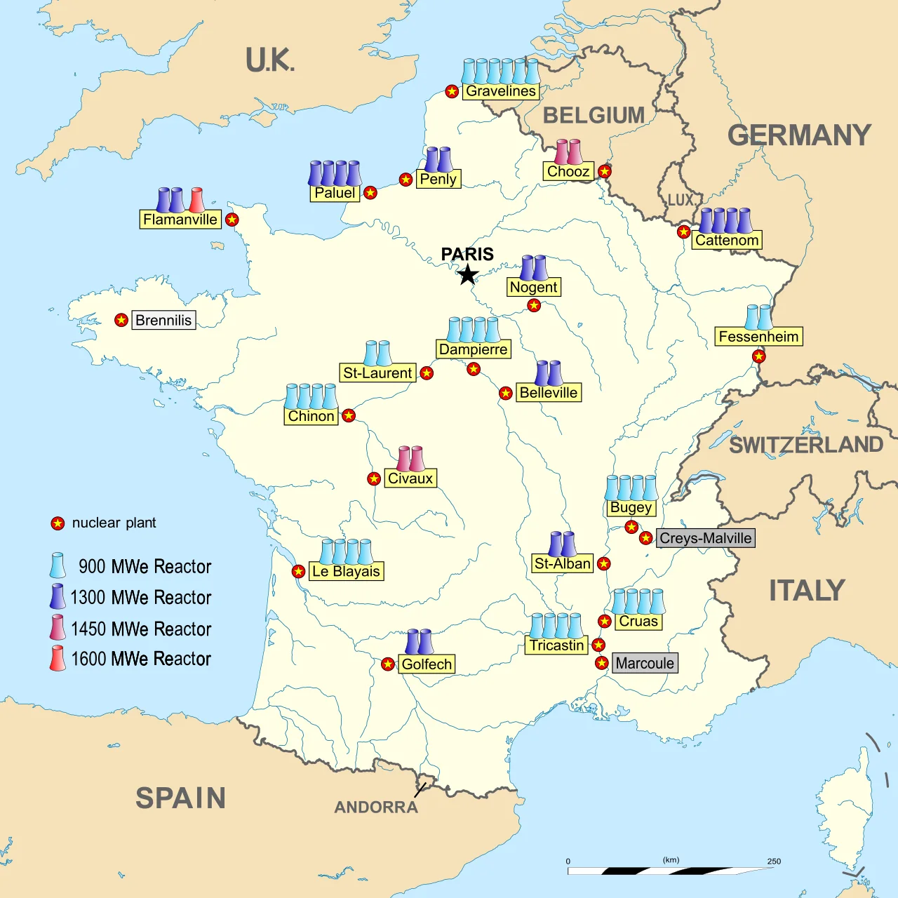

Nuclear History · 245
A 90-Second TV Announcement That Rewired a Country — France's Messmer Plan (1974)
Thirteen thousand megawatts, a country with no oil, one reactor design repeated 58 times, and the scientists who asked why nobody had held a debate.
On 6 March 1974, five months into the first oil shock, French Prime Minister Pierre Messmer went on television to announce thirteen large nuclear units, 13,000 MW in all. The decision accelerated a switch to American-licensed pressurized water reactors that had begun in 1969, and by the end of 1999 EDF had connected 58 of them to the grid. It was taken without a parliamentary debate, and it drew a backlash from scientists and protesters as well as lasting arguments over its economics.
Thirteen thousand megawatts in ninety seconds
Thirteen thousand megawatts. That was the number Prime Minister Pierre Messmer (1916–2007) put to French television viewers on the evening of 6 March 1974. France would build thirteen nuclear power units of about 1,000 megawatts each, and, he added, those 13,000 MW together equalled all the electricity France had at its disposal in 1962. The clip kept in the archive of the French National Audiovisual Institute (INA) runs for just a minute and a half. Over the next quarter of a century, it reshaped the French grid. [1]

The winter oil quadrupled
Five months earlier, in October 1973, Arab oil producers had cut output and imposed an embargo. By March 1974 the price of oil had roughly quadrupled. [2]
France felt it more than most. In 1973 oil supplied about 69% of the country's primary energy, and only around a quarter of the energy it used was produced at home (an "energy independence rate" of about 24%, though some sources say 26%). Much of its electricity came from power stations burning imported oil. A Ministry of Industry official later summed up the French position in a phrase that became a popular retort: "no oil, no gas, no coal, no choice." [5] [7]
The starting line had already been drawn
It is tempting to say the oil shock gave birth to French nuclear power. That is only half right.
In November 1969 President Georges Pompidou's government had already dropped France's home-grown gas-graphite reactors in favour of light-water reactors. The following year the national utility, Électricité de France (EDF), chose the pressurized water reactor (PWR) offered by Framatome under a Westinghouse licence and ordered two units at Fessenheim and four at Bugey. In May 1973, before the crisis, the nuclear target in the national plan had already been raised from 8,000 to 13,000 MW. [2]
What March 1974 changed was less the direction than the speed and the scale. France had been walking down this road; now it broke into a sprint.
Building the same house again and again
Work began in 1974 at Tricastin, Gravelines and Dampierre. The first programme contract that year covered sixteen 900 MW units, a second in 1976 added ten more, and orders ran at six or seven reactors a year until about 1980. Figures of "about 80 plants by 1985 and 170 by 2000" are often quoted as the plan's long-term vision, but they are uncertain and bear little relation to what was actually built. [2] [3]
On 6 August 1975 the Council of Ministers settled on a single reactor type, the PWR. Two days earlier EDF had cancelled an order for boiling water reactors from another supplier after the cost estimate rose sharply. The reasoning was that repeating one design would pay off more than making several suppliers compete. [2]
Think of a housing developer who stops designing each house from scratch and builds street after street from one proven blueprint. The parts, the construction sequence and the operator training all carry over from one unit to the next.

The chart tells the story. Fessenheim 1 was first connected to the grid on 6 April 1977. In 1980 and 1981 alone, fifteen units came on line, and forty in the eight years from 1980 to 1987. When Civaux 2 was connected on 24 December 1999, EDF had 58 PWRs, and nuclear power had been France's largest source of electricity since the mid-1980s. A figure often quoted is 56 reactors in about fifteen years. [3] [4] [5]

Speed without debate, and the backlash
The speed came at a price. The plan went ahead by government decision, without a parliamentary vote or a public inquiry. On 11 February 1975 the newspaper Le Monde carried an appeal from 400 scientists. They argued that safety, thermal pollution and the transport and storage of radioactive materials had not been properly examined, and that the programme would not even deliver energy independence. The "Appeal of the 400" went on to gather about 4,000 signatures. One study cites polls showing 76% support for civilian nuclear power in 1974 and 53% opposition by 1977. [2] [3] [8]
The economics were argued over too. Critics said France had built more than it needed, pointing to a capacity factor of about 60% in 1988 against 80–90% in countries that had invested less in nuclear power. Supporters point out that France's energy independence rate has stood at around 50% since 2000 and that nuclear power came to supply about 70% of its electricity. In 2024 the share was about 67%. [3] [6] [7]
And the famous line, "In France we have no oil, but we have ideas"? It is often put in Messmer's mouth, but it is usually traced to a government energy-saving campaign of the mid-1970s, and accounts of exactly when and by whom it was coined differ. Even so, few phrases sum up the choice better. France bet on technology and standardization, on "ideas", instead of oil.